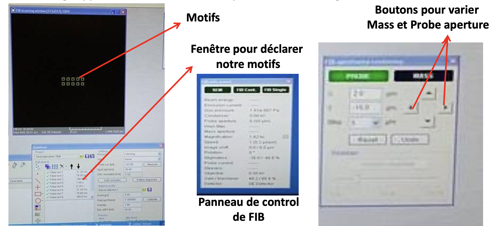
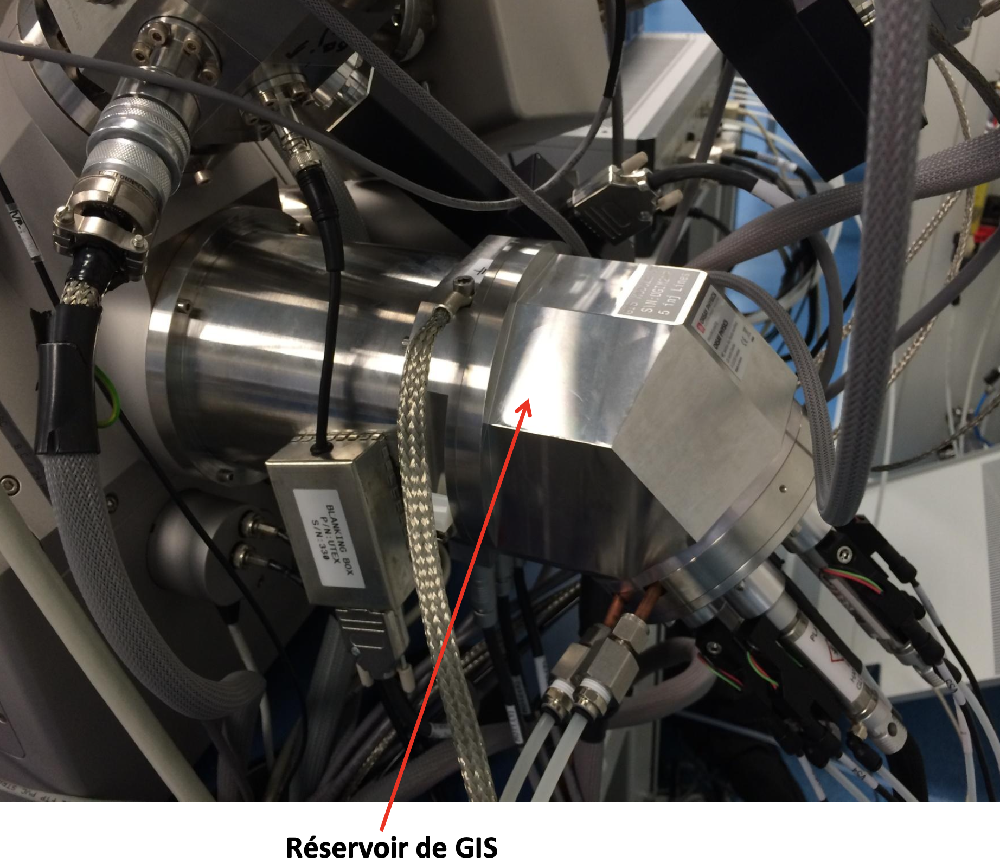
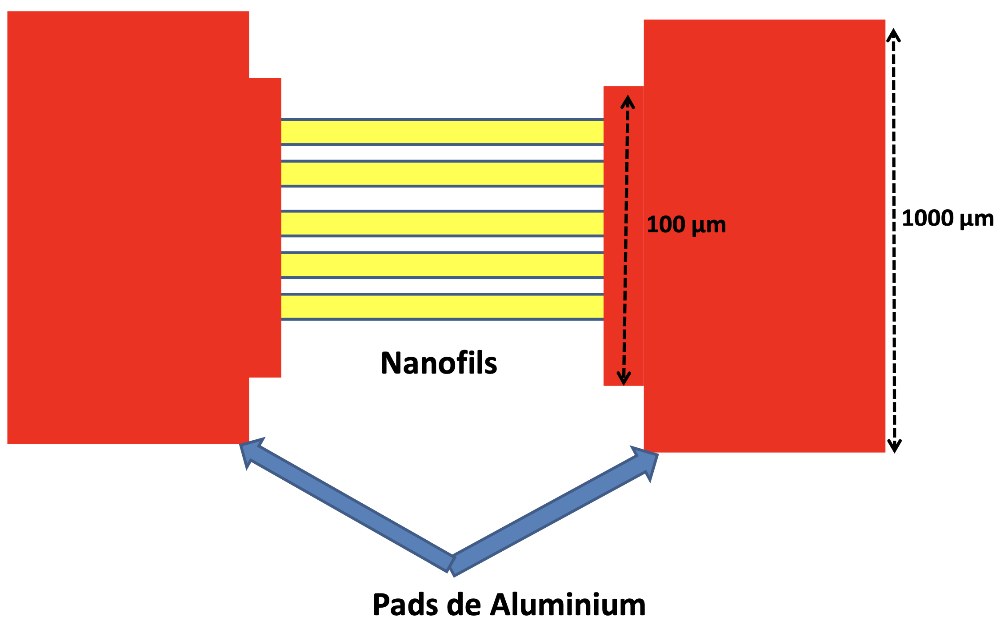
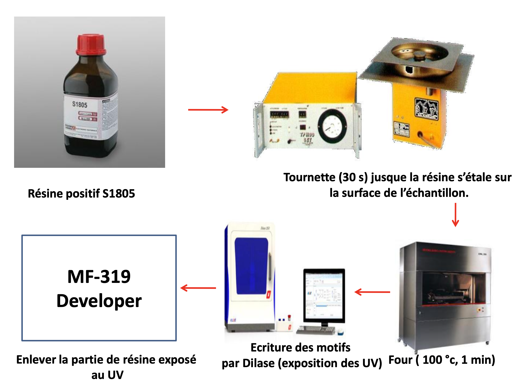

SILVACO ATLAS
31 jul 2024
Written by Benyettou Fethi
Ph.D physics, Solar panels based on nanomaterials

2.Les processus crées par FIB
o La pulvérisation d’atomes neutres et ionisés qui provoque la gravure (Sputtering process).
o L’émission d’électrons qui permettent d’imager la surface (SEM) ; ils peuvent être responsables du chargement de l’échantillon lorsque celui-ci est isolant.
o Le déplacement des atomes dans l’échantillon qui cause des défauts étendus et qui induit la formation d’une couche amorphe pour un solide cristallin (lorsque l’énergie de faisceau (Beam energy est faible).
o L’émission de phonons qui sont responsables de l’échauffement de l’échantillon ;
o L’implantation des ions incidents.
(1) Source d’ions : Constitue un reservoir de métal ( Ga, AuSi, AuGe..) maintenu à l’extrémité d’une Pointe généralement de Tungsten. On chaufe le métal jusqu’à il devient liquide en suivant les étapes : (a), (b).
• (a) : appuyer sur HV pour augmenter energy beam à 30 KeV.
• (b) : Heat on, on chaufe la source; on commence par 1.5 µm et on augmente par 0.1 µm tout les 20 seconde jusuqu’à avoir un courant de chaufage de 2.8 A.
(2) et (3) sont les tensions de suppreseur et extracteur à appliquer sur la source pour émettre le faisceau des ions. On régle ces 2 tensions jusqu’à obtenir un courant d’émission de 4 µm.
(3) et (5) Grand et petit diaphragm (Mass and probe) : Permettent de selectionner le courant des ions (petit ou grand courant) et aussi pour régler le wobbler sur l’image apparu.
(4) Wien filter (filtre de masse) permet de slectionner les ions à utiliser d’une source des ions selon leurs masse et leurs déviations par le champ électrique et magnétique appliqué.
o Au+ ions ( B=0.5 Tesla, E=29.2 V)
o Si++ ions (B=0.5 Tesla, E=108 V)
(6) Stigmator sert à corriger les aberrations de l’image
(7) Objective lens (lentille objective) permet de améliorer l’image ~ 16.33 KV.
a : Chambre pour placer l’échantillon dans le porte échantillon de FIB.
b: Caméra pour observer le déplacement de porte échantillon.
c: Porte échantillon ( numéroté de 1 à 6).
d: Fenêtre de FIB.
e: Fenêtre de SEM.
1: Ecran de FIB.
2: Ecran de SEM.
3: Ecran de GIS.
f: Panneau pour régler magnification (agrandissement), speed of scan, gain (black/white), stigmateur, Objective voltage, condenser voltage nécessaire pour l’alignement de FIB.
g: Panneau pour choisir les motifs et leurs dimensions à graver/ déposer par le FIB/GIS.
h: Panneau pour régler le déplacement de porte échantillon.
i: Panneau pour régler magnification (agrandissement), WD: Working Distance speed of scan, gain (black/white nécessaire pour la focalisation de SEM.
j: Déplacement x,y et z du porte échantillon dans la chambre à vide ( à Torr ).
K: régler le Wobller par mass et probe diaphragme (aperture).
l: Pomper/ ventiler la chambre de FIB pour introduire/sortir l’échantillon et aussi pour apparaitre l’image dans fenêtre FIB et SEM par le bouton HV.
3.Utilisation de FIB
Ventilation de la chambre jusqu’à l’augmentation de la pression. (ambiante).
Ouvrir la chambre.
Placer l’échantillon dans l’un des portes échantillon par un tournevis ( pour remplacer l’échantillon, on doit cliquer sur le numéro de porte échantillon et on va le retire tout simplement).
Fermer la chambre, puis pompe jusqu’à diminution de la pression à à torr.
Régler le déplacement de porte échantillon vers les colonnes FIB et SEM ( on joue sur X et Y , on tilter par Tilte (55 °), puis on rapproche Z.
On chauffe la source et on augmente le courant d’émission.
On règle courant d’émission à 4 µA par Extraction et Suppression voltage.
On clique sur HV-Vacum pour apparaitre l’image sur SEM pour la focalisation de l’image.
Pour retire l’échantillon : diminution des courant de extracteur et suppresseur, puis on diminue le courant de chauffage à 1.5 A, heat off. Descendre Z à 30, cliquer sur Calibrate.
Pour déplacer le porte échantillon, on clique sur la roulette de la souris!!!!
4.Focalisation de SEM
Sur le Panneau de réglage correspondant au SEM on joue sur Magnification (agrandissement) pour rapprocher à notre objet présent dans la surface en utilisant la roulette (5-15 X).
Sur le même panneau on joue sur WD: Working Distance ( la distance sur laquelle le faisceau électronique de SEM est focalisé (Focused)) jusqu’à atteindre WD et Z = 9.58. Une bonne résolut de 5 nm approximativement à cette coïncidence (WD et Z = 9.58).
On augmente le Scan Speed pour obtenir une image SEM.
5.Alignement de FIB
Fermer le SEM, et ouvrir le FIB single pour apparaitre l’image de SEM sur le FIB sans varier la Magnification.
On essaie de réduire le Wobller ( il faut que l’objet tourne sur lui-même et non pas sur sur les autres directions) en utilisant le Mass et Probe aperture et Speed scan toujours petite (2-3 ).
Quand l’image de l’objet est stable, on ferme le Wobller et FIB single .
Sur l’image apparu dans la fenêtre FIB, on pose notre motifs à graver.

6.Atomic Force Microscopy
Technique pour visualiser une surface d’un échantillon (topographie) à haute résolution Fournir les profils correspondants ( pour déterminer le diamètre, la largeur, et la profondeur Des gravures par exemple les nanofils dans notre cas.)
Son principe de fonctionnement est basé sur les interactions (attraction/répulsion) entre les atomes de la surface d’échantillon et les atomes du sommet d’une pointe (nanométrique) qui balaie la surface de ce dernier afin de construire une image de surface.
La pointe fine est fixée à l’extrémité libre d’un nano levier flexible et grâce à un tube piézoélectrique, la pointe et le levier flexible peuvent se déplacer dans toutes les directions de l’espace.
Au balayage, le déplacement du levier permet de mesurer les forces d’interaction, et définir la topographie de la surface à l’aide d’un diode laser et photodiode.

Focalisation du laser ( l’échantillon est loin de la pointe)
Faire apparaitre la pointe sur l’écran en jouant sur les vis de réglage en haut et sur Focus.
On focalise le laser sur le bout de la point par les grands vis (x et y).
on règle le A+B à 2.5 et A-B à 0 à peu prés par les petits vis (x et y).
on rapproche la pointe à la surface de l’échantillon et on la déplace vers les motifs à scanner ( repérer par des repères).
on fait appraoch.
On met scan size à 10-20 µm selon les dimensionnement des motifs.
On joue sur le Gain ( quand on a des harmoniques sur le signal vas et viens), ~ 0.8-1 et Set point pour maximiser la force d’attraction Aligner le signal d’aller avec la signal de retour sur topographie profils.
Avant tout enlèvement ou déplacement de la pointe, on éteindre le laser et mettre Scan size à zéro.
Après ouvrir le logiciel de AFM, on doit vérifier l’intensité de laser, si elle est satisfaisante donc on saute l’étape 1, 2 et 3.
7. Gas Injection System

Appareil pour faire des gravures accélères avec le FIB, dépôt des couches métallique comme le Platine Pt, Tungstène W, et des couches d’oxydes comme SiO2.
1: Target cap et Target Noz, on doit les ouvrir au début de l’utilisation de GIS, Tcap=70 °C et Tnoz=100 °C.
2: les multiples déplacement de la colonne de GIS.
3: distance entre les bus d’injections et la surface de l’échantillon.
4: la position Park.
5: les positions X, Y et Z de la colonne GIS.
6: Outgas ( Fluorine, Tungstène, Platine, SiO2……) pour éliminer les gas et les impuretés présent Dans la chambre ( capillaire).
7: Valve pour ouvrir le gas sélectionner, pour faire gravure accéléré par exemple on utilise XeF2, pour dépôt de métal Pt ou bien W…………
8: Target réservoir, chauffer jusqu’à la température désiré Target res.
9: Motor initialisation, pour remettre le GIS à la position initial.
8. Utilisation de GIS
Ouvrir Outgas pour dégazage des impuretés, en sélectionnant le gas désiré ( par exemple le Fluorine XeF2 pour la gravure accéléré (Line 3).
Sélectionner Park position, puis appuyer sur Go.
On met distance à 50 µm.
Si X position est à 0, donc on met Target (X) à 20000 puis on appuyer sur Go (Back/Forth), On règle X à 23800, Y à 9700 et Z à 10850 en utilisant les multiples déplacement (Back, Forth, Up……………..) jusqu’à l’apparition des buses d’injections dans le SEM.
Ouvrir tout les boutons de Target Cap et Target Noz jusqu’à la stabilisation de la température à 70 °C et 100 °C respectivement.
Ouvrir Target res (Fluorine par exemple) et on attend la stabilisation de la température à 7 °C.
Ouvrir Valve de Fluorine et on regarde column pressure augmente jusqu’à la stabilisation ~ Pa .
Faire la gravure, on choisit accelerated etching mode dans le panneau de déclaration des motifs.
quand la gravure termine, on ferme la valve du gas spécifié et on attend la pression descend à Pa.
pour retirer le GIS, on met distance à 200 µm, puis on appuyer sur Motor initialisation. On éteint Target Cap et Target Noz.
9.Rapid Thermal Oxydation RTO
Appareil utile pour faire l’oxydation thermique humide et sec ( Dry and Wet), et pour faire Le recuit thermique dans le but de modifier les propriétés physique et électronique d’un matériau.
10.Utilisation de RTO
A. Introduire l’échantillon dans la chambre de RTO.
B. Ouvrir les gas de O2 et N2 et aussi la pompe pour créer un vide dans la chambre.
C. Dans le logiciel, aller à Maintenance pour tester le flux des gas.
D. Dans Receipe (recette) dowload une recette désiré parmi les recettes existante ( par exemple : 800 °c, 500 s).
E. Aller à Processing et appuyer sur Start pomping pour passer de l’ambiante vers le vide ( 3 fois ( 60 s chaqu’une) et chaque fois cliquer sur Next step) jusqu’à il envoi le O2, puis Il stop et il commence le refroidissement).
11. Photolithography Laser Direct writting

Appareil pour lithographie par écriture direct sans Utiliser le masque comme les autres techniques de lithographie optiques.
Résolution < à 2 µm.
Compatible avec la majorité des résines commerciales.
Réalisation des prototypes à la demande grace à son Logéciel Dilase Design.
Très utiles pour contacter des objets nanométriques avec Une grande précision.
Utilise une source de laser émettant à 375 nm (UV), 70 mW

